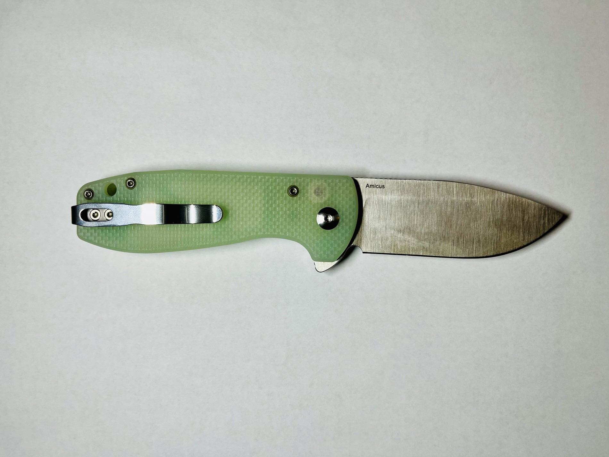
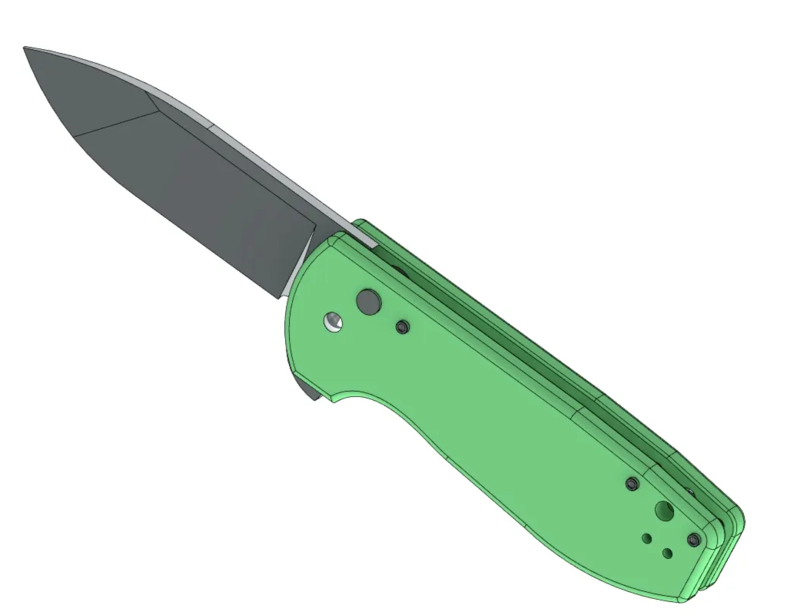

personal_projects
knife_modeling_reverse_engineering
This project was personal practice to become more comfortable with SolidWorks and accurately dimensioning designed parts to real life. I fully reverse-engineered a model of a knife that I owned, taking care to make the model as accurate to reality as possible.

Original knife

Final assembly (SolidWorks)
Animation (SolidWorks)